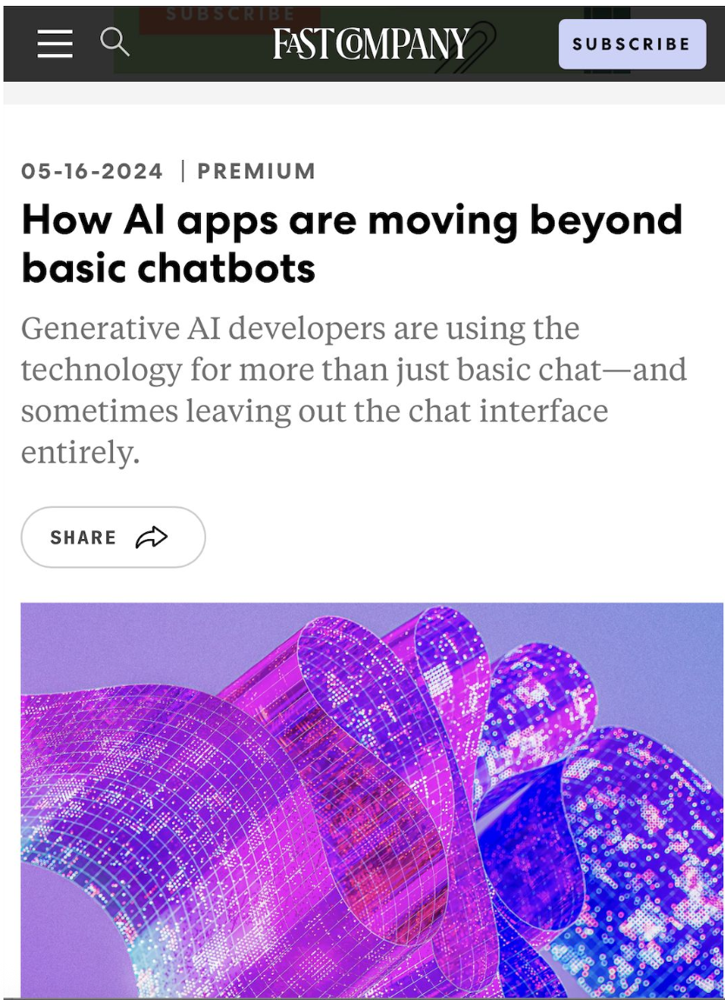
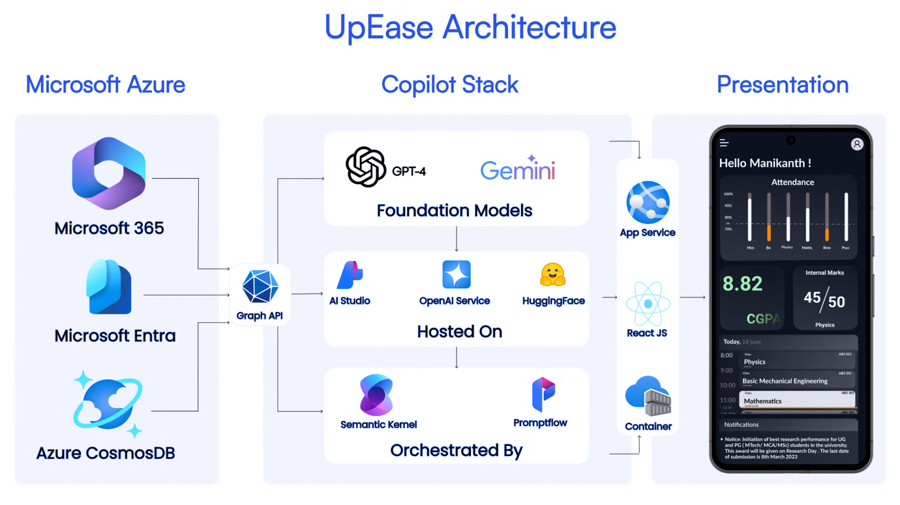
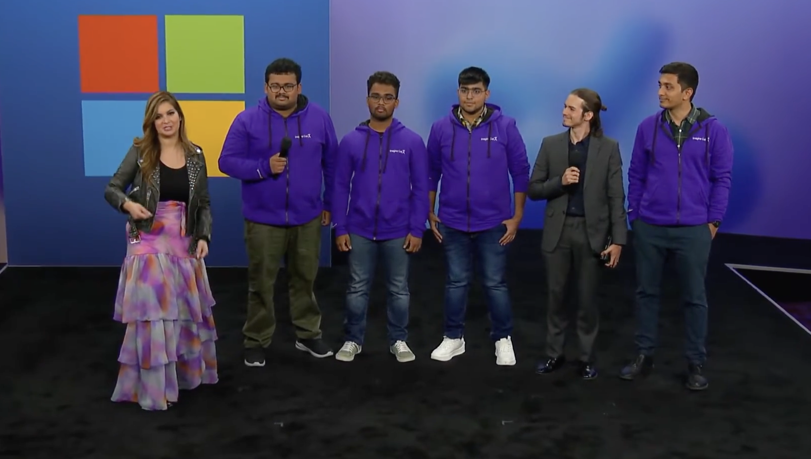

UpEase is more than just a project. It was pretty much my entire life from early 2023 to late 2024. It was my first serious introduction to computer science, AI Technology, software engineering, leadership, and the usual startup-y stuff like presenting, fundraising etc. it turned out to be the catalyst through which I took Computer Science seriously and formed the basis of my shift to computer science.
UpEase – AI Copilot for Higher Education
Overview
UpEase is an AI-powered educational management platform built to modernize university operations through intelligent automation, Microsoft 365 integration, and generative AI.
Traditional university management systems are fragmented. Learning Management Systems (LMS), Student Information Systems (SIS), attendance platforms, communication tools, and analytics dashboards often exist as disconnected products, forcing administrators and faculty to manually synchronize information across multiple systems.
UpEase was designed as a Microsoft-native platform that unifies these workflows while introducing an AI Copilot capable of helping educators understand institutional data, identify at-risk students, and automate routine administrative tasks. The platform combines a multi-tenant SaaS architecture with Microsoft's cloud ecosystem to provide a scalable solution for higher education.
Motivation
Before building UpEase, I worked on Manipal OSF; another one of my crowning projects which still leaves a strong legacy at MIT Manipal today. I have written about my story with Manipal OSF as well, which I will link at the end of this post.
Briefly, Manipal OSF was an open-source initiative started to improve the academic ecosystem at Manipal Institute of Technology. As we grew this organization to thousands of student users, we realized the clear gaps in educational technology tools used by universities which operate at the scale of MIT.
At the same time, Microsoft was rapidly investing in the concept of AI Copilots. While Copilot experiences were emerging across productivity software, there was no comparable platform focused on higher education that combined learning management, student lifecycle management, and AI-driven institutional insights within the Microsoft ecosystem.
UpEase was created to bridge that gap by reimagining higher education software as an AI-first platform rather than a collection of disconnected administrative tools. This vision eventually evolved into a startup, validated through Microsoft's Imagine Cup and later demonstrated at Microsoft Build.
The Problem
Most universities rely on several disconnected systems.
Learning Management Systems
Student Information Systems
Attendance software
Communication platforms
Analytics dashboards
Spreadsheet-based reporting
This fragmentation creates duplicated work, inconsistent data, delayed interventions for struggling students, and very little institutional intelligence.
Solution
Instead of building integrations across different third-party platforms, UpEase introduced a unified, AI-enabled education management platform built as a layer over Microsoft 365.
The AI-enablement was accomplished through a Copilot, which was synced to the various aspects of a student’s academic profile using the Microsoft Graph API and could surface this information through targeted queries to a chatbot.
This product was being developed in late 2023, when the concept of generative AI was not mature, and simple chatbots were raising millions of dollars. The concept of an agent did not exist at this time. What we built in effect was an agent, as it could perform tool-calls over the Microsoft Graph API. I built painstakingly by wrapping the individual API endpoints into custom functions which could be invoked by the LLM, and a decision tree over these endpoints to help the LLM plan the sequence of actions to perform.
In fact, FAST Company, a leading tech blog, featured me in their article.

We built two stand-alone applications, the academic console for professors, and a student console. We also developed several integrations across the spectrum of Microsoft apps, like SharePoint, Teams, Word, Excel etc.

Achievements
UpEase was a critically acclaimed startup project. Our notable achievement was winning the Microsoft Imagine Cup amongst all Indian teams. We also made it to the top 5 worldwide.
We received an invitation to attend Microsoft build, with travel, accommodation, food and registration expenses completely borne by Microsoft. This was an incredible experience, and I will probably write more about my it on my medium blog.
Prior to Microsoft Imagine Cup, we also won 3rd place at the MES pitch tank, a national level startup competition.
I also presented this startup project as my BTech thesis.
You can also watch me talk about UpEase at Microsoft build here.
